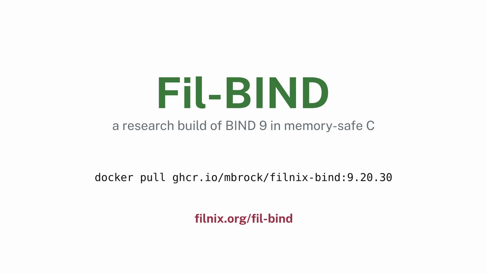
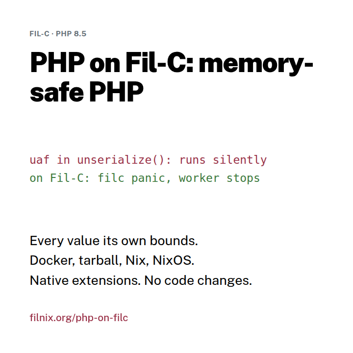
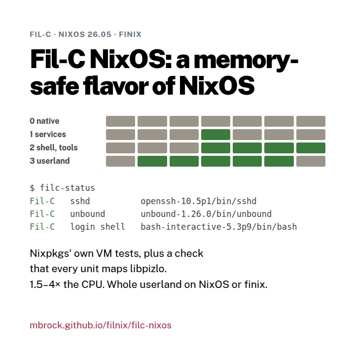
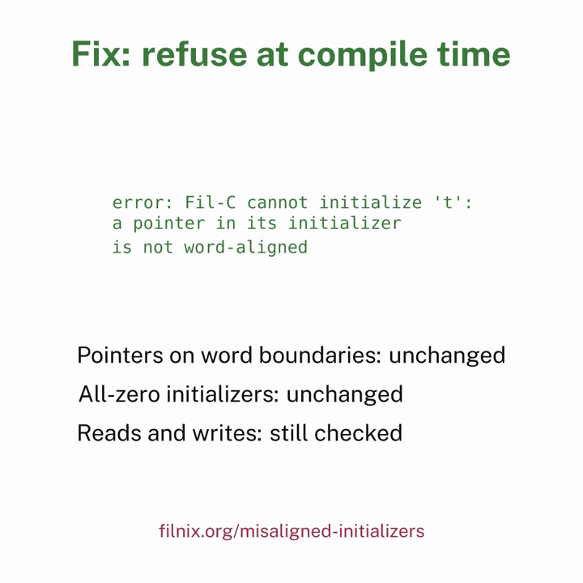
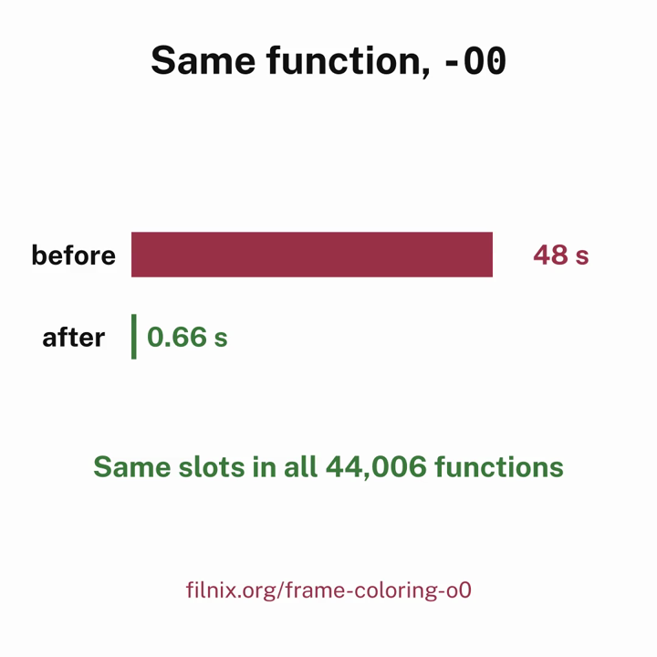
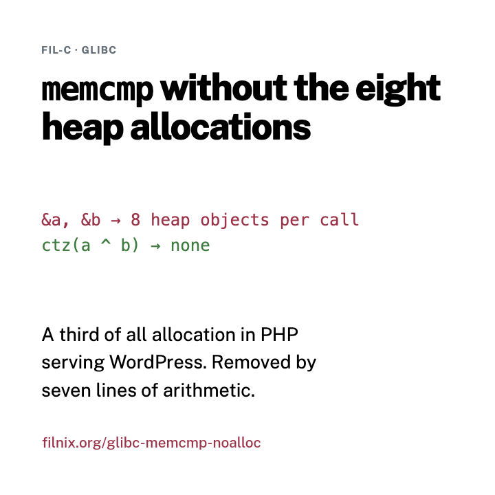
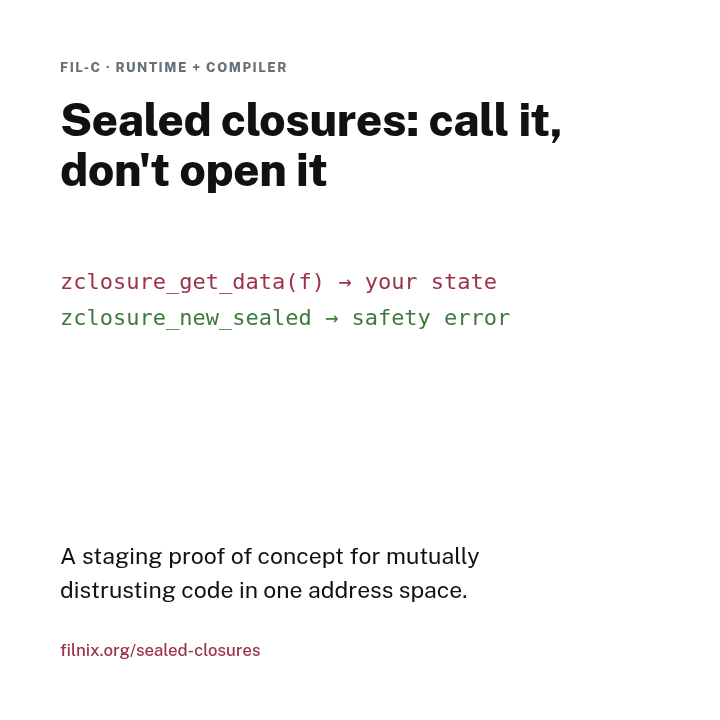
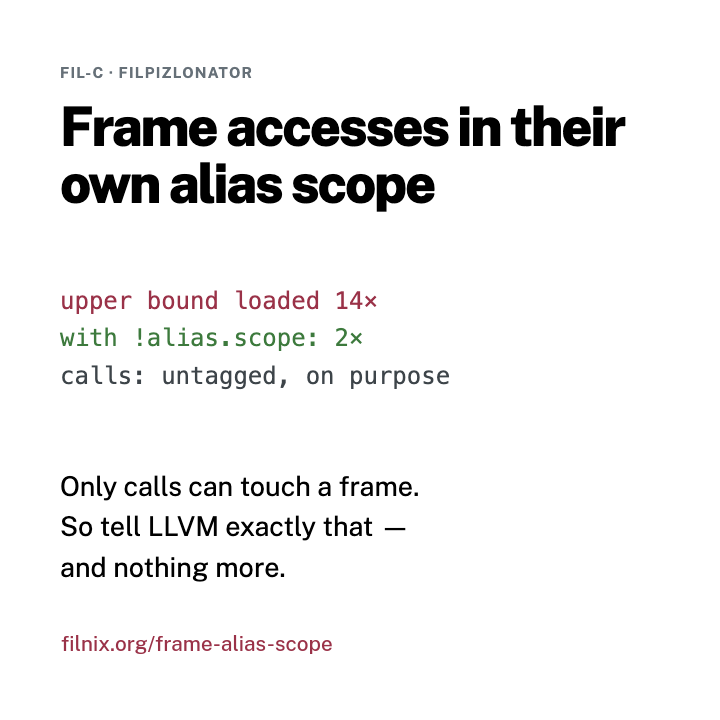

Explainers
Each explainer describes one change or one system for a reader who has not read the code. It says what was wrong or missing, what changed, what it costs and how to try it. Most have a short video and a reproducer.

Fil-BIND: BIND 9 in memory-safe CBIND 9.20.30 on Fil-C, the year's CVEs, what it costs. Video, Docker, tarball and NixOS.
PHP on Fil-C: memory-safe PHPPHP 8.5 and its native extensions, without a rewrite. Real server performance, security tradeoffs, and an experimental LLVM JIT. Docker, tarball, Nix and NixOS.
Fil-C NixOS: a memory-safe NixOS and finixA whole system whose packages are Fil-C builds, systemd and PAM included: one module, what it costs, and how filc-ps proves nothing else runs native.
Misaligned pointers in global and thread-local initializersA clang assertion and silent shadow corruption in Fil-C 0.686, and a compile error instead. Video and reproducers.
Frame slot coloring at -O0: from cubic to near-linear48 s to 0.66 s for one function, with identical frames. Video and interactive model.
memcmp without the eight heap allocations&a and &b put eight heap objects in every memcmp call — a third of PHP's allocation on WordPress. One ctz removes them.
Sealed closures: call it, don't open itA staging proof of concept: closures whose callers cannot read, replace or rebind their data, and the inliner bypass review found.
Fil-C frame accesses in their own alias scopeEscaped frames make LLVM reload one upper bound 14 times instead of 2. One alias scope, with calls deliberately left out.nanofil: where it stood in October 2026 is an older status page, kept as it was written.